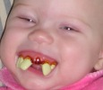
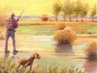
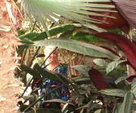

Gun Cabinet Key Goes Missing
It seems that the Cluff family is at the center of yet another embarrassing weapons blunder. Past blunders include mislaying their 36" machete, selling their motorhome without removing the pistol they concealed for emergencies and a bizarre incident involving the twins, a catalpa bean and several pints of spurting blood. This time the key to the gun cabinet seems to have gone missing. "I hope to find the lost weapons cabinet key so I can get out my bow and arrows," says a largely unconcerned Diana. "I want to work on shooting. I watch the hunting channel and know lots now." Cluff boys Dallas, Weston and Nial have refused to comment on the whereabouts of the missing key and have challenged anyone who accuses them to pistols at dawn.
Halloween Report
 "Because Halloween was on the Sabbath this year," reports pious mother, Diana, "our boys didn't get to go trick-or-treat or to the town parade, but they made it through fine because we all went to the church Halloween party on Saturday instead. Everyone trick-or-treated decorated doors in the hallway while Dallas and Weston handled the game booths in the cultural hall."
"Because Halloween was on the Sabbath this year," reports pious mother, Diana, "our boys didn't get to go trick-or-treat or to the town parade, but they made it through fine because we all went to the church Halloween party on Saturday instead. Everyone trick-or-treated decorated doors in the hallway while Dallas and Weston handled the game booths in the cultural hall."
The 2004 costume parade:
Dennis-orange shirt/pumpkin
Diana-cowgirl with Marshal badge and Navajo jewelry
Nial-rock climber (cop-out)
Twins-football uniforms (they think it attracts girls)
Soren-ninja
Kira-fairy
Edward-an Englishman (cop-out)
Daisha-pirate
Dakota-vampire
Everyone Else-no report
Good Deeds Can Kill
Musical philanthropist, Diana, often volunteers to play her harp to soothe patients at the local hospital, however, she recently discovered that she was doing more damage than good. "I like to wear white when I play the harp," says Diana, "but they don't like my white clothes in the hospital because when patients see someone all dressed in white playing the harp beside them they freak out because they think they've died!"
Bald & Toothless
Tiana and Hyrum's poor baby Talea has had it rough. Though only six months old she's already had her head shaved twice and now she’s having trouble with her teeth!
Parents Encourage Truancy
In a shocking revelation it was discovered that senior citizen parents of ten, Dennis and Diana, actually pulled their boys out of school to help with chores that were too strenuous to cope with alone! “We called them out of school so they could pick elderberries and Mullein with us on the top of Dead Indian Road,” says Diana unapologetically. “What’s wrong with that?”
Peeper Scare
The Peeping Tom incident of 2003 turned nervous mother of ten, Diana, into a vigilante. So when, at 1:45am, she awoke to the sound of footsteps running across the lawn, she sprung into action. "I stayed up most of the night stalking the dark yard with a stick in my hand to get the runner," reports Diana. "But the next morning I found out that it was just Weston running to Nial's room to check if Bryce was there, as Bryce had just got a new car."
Explosive Song
It's no secret that Shira loves singing, but what is less commonly known is that Shira is also a songwriter. Her latest subject is the active volcano, Mt. Saint Helens. "The mountain is about to blow," says Shira's mother, Diana. "They show it on sallelite feeds 24 hours a day in anticipation of the moment. Shira has written a really good, good song about it and should get it out now! When I told her this she said no, even though she could make lots of money."
Mother Encourages Revenge Beating
When Weston got his tetanus shot his kind and loving twin brother, Dallas, repeatedly punched his sore arm in what he thought was a hilarious joke. But one-week later Dallas was horrified to discover that he too was scheduled to get the dreaded tetanus shot. "Now the tables are turned," says the twin’s mother with and mischievous grin, “and Weston is permitted to sock Dallas in the arm constantly - just like Dallas did when Weston got his shot."
Thanksgiving Wishes
This Thanksgiving Diana would like to say, "Happy Thanksgiving to all the family! Have a 'Mad, Mad, Mad, Mad World' after watching 'The Emigrant Saga' and eat lots of yams so I can get my 50 grandchildren!"
Johnsons Spread Out
Just a few months after having moved in with Dane and Karen, Tiana and Hyrum Johnson have found a place of their own - an apartment above the community building in downtown Coquille. "We're the 'caretakers'," says Tiana "but actually we're just plain old janitors. We do 20 hrs a week of work at minimum wage, and that almost covers the rent cost. At least we have our own place to spread out in.” And they need it too with two of their three dogs expecting puppies and their own baby learning to crawl!
Two Talks
Both Tiana and Hyrum were asked to speak in their ward last month. Sources says the talks were excellent.
Got a problem? The Cluff Family Times' lifestyle guru can solve all your personal, romantic, financial, spiritual, decorating and fashion dilemmas. The answers are only a click away.
Don't miss the next issue of The Cluff Family Times. It's our Winter edition and promises to reveal all the holiday hijinks from Christmas to New Years and Valentines Day. Coming to a computer near you before Spring Equinox (March 20th).
|
|
Shira & Jeremy Announce Pregnancy
Shira and Jeremy are happy to announce that they will be having a baby at the end of April. The couple plan to move to Portland this winter where Jeremy will finish college. "It is a happy time," says Shira's mother, Diana. "Shira is like me, she will have a baby at 19, like I did with Bart. Shira will turn 20 a month after the birth. We are all so happy for Shira and Jeremy. I AM going to get my 50 grandchildren!"
Baby Girl On The Way
Recent ultrasound pictures have revealed that Edward and Daisha are having a baby girl! This is good news for the couple who already have a nine year old boy and had been hoping for a girl. Their only concern is that she seems to show a strong attachment to her thumb - a habit from the Lanyon side that is not easily broken. The happy couple plan to name their baby, who is due in late March, Tabitha.
Local Bomb Threat
Nial left to catch the school bus at 7:20 - as usual. The bus pulled up on time - as usual. The driver opened her door but this time, things were different. Instead of letting Nial on board she announced that school was cancelled due to a bomb threat. This, just one month after a briefcase bomb was discovered at the local Wal-Mart. "A worker found the bomb," reports concerned parent Diana, "but the police were able to get it safely outside before it went off. Between the Wal-Mart bomb, the highschool bomb and the fire Nial put out in the stadium (see 'Arsonists Redeemed' in the Summer 2004 Edition) I guess our town is going to the dogs!" Amateur ammunitions experts, Dallas and Weston, have remained suspiciously quiet about both incidents. When asked for their reaction, they issued a joint statement with a refusal to comment until they have spoken to their lawyer.
Weston: Mild Mannered Superhero
When Diana got a call from the Dean of the Middle School concerning one of her boys, she was delighted to find that for once it wasn't negative. "The Dean said, 'this is a good call not a bad one'," says proud mother Diana. "He said he wanted me to know that Weston had saved the school $2,000 when he rounded up the boy who stole a laptop computer. As Weston and Dallas rode the school bus home one day, Weston, with his extra great hearing, heard a boy say to a girl that he had stolen the laptop from the school and was going to sell it. This was one of Weston's friends but he knew he needed to do something so the laptop could be returned to the school. So Weston told the Dean the whole story. The Dean said most kids wouldn't have the nreve to report a thief. He said he has always admired the Cluff children over the years, as they have great values. Now the boy who stole the computer has been asking around about who reported him, but Weston isn't worried about being beaten up if he finds out, as the twins are the tallest and most muscular in their grade. We had a ‘du-to-du’ for the twins and I bought them prepared cereal for a prize. That was as good as Christmas to them - no more home-made applesauce (from unpeeled apples), home-made granola or chewy boiled wheat kernels for breakfast!"
Grandma is Publicly Groped
At an appointment with her new physician, Grandma Anna was asked if she’d mind posing with the doctor for a photo in the local paper. The doctor had authored a book of poems about herbs and was having an article written up on her accomplishments in the ‘special section’ of the Daily Tidings. Of the 30 or so photos that were taken of Grandmother and the doctor, the editors, rather oddly, chose this shot (left). “They picked one with the doctor putting her stethoscope down mother’s shirt and mother sitting with her eyes closed – like she’s enjoying the "examination" way too much,” says embarrassed daughter, Diana. “She got a lot of comment about it. The photo must have been chosen for the gay population. So much for letting your picture be taken for the paper.”
It's Twin Day! - Again?!
It was Twin Day again at AMS (see Spring Twin Day article). “There are several sets of twins at the Middle School,” says the twin’s mother, Diana, “but none of the other twins look alike as they are boy & girl or fat & skinny. Dallas and Weston decided to dress alike and do their hair alike for the day. Then they switched classes at school. No one could tell anything was different so Dallas passed a note to the teacher saying who he really was. After nothing happened he went up to the teacher and said, ‘I am Dallas’. The teacher didn't respond, so he repeated his confession over and over. Finally the teacher got mad and told him to stop saying that he was Dallas as she didn't think it was funny and knew he was Weston. He calmly explained that because of Twin Day he and Weston had switched places and finally managed to convince her - to the amusement of the whole class. The teacher then apologized for getting mad, which made Dallas’s day.
Like Mother Like Daughter
Shira has recently been seen ‘putting on wild music and dancing in a wild manner into the night,’ a development that echoes her mother's recent obsession for dancing to Hungarian folk music (see ‘Diana's New Obsessions’ above). "Shira is outstanding in dance!" says her proud mother, Diana. "I wish I had given her lessons, she would have been famous by now." But the similarities between mother and daughter don't end there. "Shira married young and in my wedding dress just like me," says her enthused mother. "Now she's going to have a baby at 19 just like I did. Shira has also borrowed Emigrant Saga from me and loves it as much as I do. I can't believe she wore my wedding dress for her wedding and loves the Saga, she has a lot of her Mother in her."
Musical Geniuses
The Twins seem to be improving on the violin. “Their latest concert was a shock for me,” reports their mother, Diana. “I couldn't believe how good the group had gotten. Weston's partner, an oriental girl, is going to perform at the White House or someplace like that, I've forgotten where it was, but it's a big deal.”
Talea, though only six months old seems to have a knack for all things musical. “When we were at Church last week,” says her grandmother, Diana, “she heard the music begin and her face changed. She held the side of the hymnbook like we all do and began to try to sing the whole song through. My mother and I couldn't believe it, and started to giggle. She held the book until the hymn was finished. It is really something to see such a tiny baby do the things she does. She is amazing. Hyrum said when I played my harp the night before Talea started singing as I played. Most babies are into music, but she seems more into it than normal. I expect a talented musician has been born."
Danes and Karen's Children are perfecting their musical skills in their pop band. “When I went to visit a couple of weeks ago,” says grandmother, Diana, “I noticed how really good their family band was. They look like they are about ready to get a name for themselves.”
Brush With Bush
During the recent presidential election campaign the Cluff family drove to Medford to participate in the republican rally. “As we were driving to Medford,” reports Diana, “we saw quite a few anti-Bush posters. As we hit heavy traffic, Air Force One was landing and being taken to the fire station for the best security. We had to park a mile away and walk. About 20,000 people had tickets to go in. We were faced with anti-Bush protestors yelling and holding signs as we walked toward the venue. When we got there we were told we had to have photo identification so Nial had to run back to the car to get mine. We had to be searched before they let us in. They didn't allow chairs or blankets in. No one told us that we would have to stand for hours and hours. The whole thing was held outside and it was hot. A lady by us fainted. I found a place in the shade for Dad to hold onto a railing so he could stand it. Our boys took off toward the stage President Bush would be on but couldn't get close to it. We moved from where we had last left the boys so I couldn't believe they found us in such a large crowd of people. The boys then climbed up on a roof with some other boys to get a better view, but the police made them get down. Just one word from them and they obeyed, I had told them over and over to get down. I guess I will have to get a police uniform to get them to mind me. Lots of country music was played as we waited and waited. After our legs about dropped off the President and his wife finally showed up. The President talked and it was good though we could only catch him in glimpses.”
Chicken Report The Egg Lottery “We get 17-20 green and brown eggs a day,” reports Diana, “but the nasty hens eat some of them. One of the hens is sitting on her eggs. I guess the boys gathered some of her eggs and were surprised to see that things were developing when they cracked open an egg while cooking. Here we go again with scary eggs.”
The Egg Lottery “We get 17-20 green and brown eggs a day,” reports Diana, “but the nasty hens eat some of them. One of the hens is sitting on her eggs. I guess the boys gathered some of her eggs and were surprised to see that things were developing when they cracked open an egg while cooking. Here we go again with scary eggs.”
Bird Lover “When Dad goes in the chicken coop,” says his wife, Diana, “the hens all love him so much that they all flock to him and even try to fly up to his shoulder to sit like a pet bird. I have never seen chickens act like pets before. I guess they think he is hot because he spends so much time feeding them cut grass and apples. Little do they know that he’s the one who will eventually give them all the chop!”
Cross Dressing Chicken “In all our years of chicken rearing,” says a confused Diana, “we’ve never seen anything like the weird batch we got this time. When the chickens developed into adults, one black chicken got a big comb like a rooster but feathers like a hen. Now every time the real rooster crows the mixed up chicken tries to crow like a rooster and sounds terrible. Dad is worried about the chicken/rooster. It’s the first cross-gender chicken we have ever had.”
Diana's Pet Turkey: Death Diary
Day 1 I love my pet turkey as she makes tropical sounds and I’ve always wanted a tropical looking yard complete with all the right sounds. She is the closest thing to a rainforest bird sound. Also she makes me laugh, running around and trying to fly all clumsy compared to the chickens.
Day 2 Thanksgiving Day is approaching and there is talk of a big, fresh turkey on the table. I love the noise my Turkey makes and want her to live but Dad wants to kill her as she overeats and will be expensive to keep through the winter.
Day 3 Dad went out with the axe and took down my turkey for Thanksgiving dinner.
A Dad said we need a huge pan, as she is about 50 lbs! I only thought she would be about 20 lbs and now see why we would have gone broke on the chicken feed bill.
B Sick, Dad just put the huge turkey on the porch and it's feet are still on and straight up. The head is off and the gutting is done.
C The turkey is now in the sink, so I need to video it all.
D The house is filled with steam as Dad boils pan after pan of water to scald my pet and then pluck her feathers.
Day 4 Dad stayed up till 1am cooking my pet turkey. The boys couldn't believe the size of the bird in the oven. WHAT A MAN I MARRIED! I have a real man, a beast killer - for food, that is. It is strange how romantic it is for a woman to have a hunting man that brings in the food.
Fish Poisoning
As the weather turned cold in Southern Oregon, the Cluff’s walnut tree began dropping its toxic leaves into the nearby koi pond with devastating results. “The tree went naked,” reports distressed mother, Diana, “and its leaves poisoned the fish, so now all the fish are bloated and belly up. Oh well. Win some, lose some.”
Surprise Crop Springs Up
Despite having carefully and lovingly cultivated a packet of prize pumpkin seeds in a robustly mulched section of the garden, the Cluff’s pumpkin patch betrayed them by yielded nothing at harvest time. But all was not lost because it was soon discovered that a couple of rogue pumpkin seeds haphazardly cast beneath the trampoline by a wild Cluff child had grown into a monster vine that eventually produced two 20 lb pumpkins -just in time for Halloween!
Football Boys
Though the twins have only won one out of their last four football games, they are still revered for their sporting physiques. “They are the most muscle-bound boys on the whole team,” says proud mother, Diana. “When they line up to tackle, it sets fear into the other team. They have big legs, arms, shoulders and chests - much bigger than the other boys. I see why the High School came to the Middle School last year to ask them to come work out in the weight room to get in shape for the Grizzlies in a few years. They keep telling Dad the boys are naturals. I’ve know that since I was pregnant with them, as they were so active. Since they were about a year old they have wrestled constantly. I only fear the house will fall apart or they will put one of us in the hospital with all their rough play."
Nial: On His Way Up
After years of trying to interest him in track, swimming or football, Nial’s mother, Diana, had given up on finding a sport that Nial might be interested in. But Nial has finally settled on rock climbing. He joined the climbing club at school and did very well at his first competition at the SOU gym.
Shootin' Some B-ball
The twins have been keeping busy running both on and off the basketball court. “I met the boys bus as soon as they got back from their Medford game and gave them their Sunday clothes and ten minutes to change for their concert. I didn't realize, until I saw Weston tripping as he was running from the locker room, that I had brought him two right-footed shoes! Oh well. Win some, lose some.”
Diana's Guide to Shopping for Sport Shoes
“The boys have just started basketball,” says thrifty shopper, Diana, “so we had to buy them new shoes and clothes after just having bought them football things. It makes me mad to spend more than a few dollars for these things because they wear out so quickly. Sport shoes always cost a lot. But with my cost-cutting talent I managed to buy six pairs of shoes, two shirts, shorts, a basketball, big bathroom lights, hemp for Nial and two pints of motor oil for the price of one pair of sport shoes. Even Dad was stunned with the prices I found. When you pay your tithing one of the promises is that your money will stretch. I even found sport shoes for three dollars at Wal-Mart, but the boys wouldn't take them. I am trying to teach them how to budget the smart way so they have money for things like motorhomes and boats.”
|
|
Diana's New Obsessions
 Sleeping outside: Sleeping outside:
I have been sleeping out loving watching the moon. My mother named me right: Diana, goddess of the moon and hunting. I watch the moon most of the night because as a senior I can't sleep much. Dad sleeps indoors as he isn't much of a moon man. I think it’s too hot and stuffy inside. I get frost on my sleeping bag as it goes to freezing or below, some nights. The fresh air make my lungs feel like long, ice-cold tanks in the morning and my energy is on high when I wake to do my wild folk dancing. When it gets cold enough to frost, it freezes my insides and I feel so refreshed and energized all day, like air conditioning. You have to sleep outside to know what I mean. When I sleep inside on raining nights, I feel like a slug in the morning; no energy, still sleepy and wanting to sleep in. That is always how I have felt and didn't know why. I am glad I can wake up at six each morning and jump up with energy. Also, nature's show is great. I love hearing the creek and the owls, seeing the stars the moon then the beautiful morning sunrises, the birds singing and flying in flocks and the squirrels in the cottonwood tree. The other night something with four legs was walking on my legs. It was about 10 lbs. I just kicked my legs and it took off. As long as it’s not a skunk or doesn't eat my face I am ok.
Hungarian Folk Dancing:
“I am still dancing each day to wild music from Hungry. I have found that dancing works better than yoga, running, walking, jumping on the trampoline, floor exercises or any other exercise for thinning my body. It is more fun too. I get hot in just a few minutes and have to open the sliding doors. I use to dance each night when I was a teenager as I could see my reflection in the windows and do a better job fixing my mistakes. I heard people would be outside watching me go wild with my dancing from time to time. Now I am doing it again and cars drive up and see a senior going wild, watching herself in the windows at night. One lady told me years ago that if I had been born in the days they burned witches they would have burned me, as I am so different from most people. She said, ‘you dress different, do herbs, have more children than normal, cook different, decorate your home way different than most and do things far ahead of what is normal now, so you would have been considered a witch and would have been put in the fire.’ I am glad I can be me in today's world without getting hot - unless I’m doing my wild dances.”
The Hunting Channel:
“I am way into the hunting channel that comes from the South. They all talk like the Southern people and I love it. Sometimes we go to Africa or someplace else to hunt on someone's land with a hunting guide. I see why Nial wants to be a guide, lots of people do it and it looks fun. Today was hog bow hunting. The men say they love to hunt the 750lb hogs because they are one animal that may hunt you back and it is a challenge. After they get the hog, they show how to cook it. It is hot! Now all I need is a four wheeler to get the game with.”
Gun Smoke:
“I love Westerns, especially Gun Smoke because the lead character, Matt Dillon, reminds me of my great grandfather Earnest Albert. They used to play it on the satellite seven times a day and I'd never miss an episode, but now they only have it on at 3am!”
Scouters Nial, Dallas, Weston, Ammom, Braden and Soren are all active in the Scouting program and working towards their Eagle. The race is on to beat Dane, now age 38, who was the first boy in Oregon to get his Eagle Scout Award at 13 (though he actually finished at 12) and got his name in the paper for his valiant efforts. Nial has nearly completed his Eagle Project - making a trail through poison oak in the park. The twins are Star Scouts and close to finishing. Recently Dallas and Weston have been seen in their scout uniforms helping with the flag ceremony at the beginning of College football games. But they don't exactly do it out of the kindness of their hearts, their pay off is the all-you-can-eat snack bar - free to those who helped in the flag ceremony. Watch this column to keep up on their progress. Scout pictures.
Nial, Dallas, Weston, Ammom, Braden and Soren are all active in the Scouting program and working towards their Eagle. The race is on to beat Dane, now age 38, who was the first boy in Oregon to get his Eagle Scout Award at 13 (though he actually finished at 12) and got his name in the paper for his valiant efforts. Nial has nearly completed his Eagle Project - making a trail through poison oak in the park. The twins are Star Scouts and close to finishing. Recently Dallas and Weston have been seen in their scout uniforms helping with the flag ceremony at the beginning of College football games. But they don't exactly do it out of the kindness of their hearts, their pay off is the all-you-can-eat snack bar - free to those who helped in the flag ceremony. Watch this column to keep up on their progress. Scout pictures.
Sevey Family Reunion
 Next summer, August 10 - 13 2005, there will be a Sevey reunion in the breathtaking Redwood forest on the California coast. Hiouchi Hamlet has been reserved for our group and is located nine miles inland from Crescent City - just across the road from the Jedediah Smith state park entrance. An RV park is available for those who are interested, otherwise various accommodations can be found in the plentiful motels of Crescent City. The Sevey reunion of 2005 promises to be a great adventure with the crystal clear Jedediah Smith river and the pristine beaches of the beautiful Pacific Northwest only moments from base camp. You don't want to pass this one up. Mark your calendars now. Next summer, August 10 - 13 2005, there will be a Sevey reunion in the breathtaking Redwood forest on the California coast. Hiouchi Hamlet has been reserved for our group and is located nine miles inland from Crescent City - just across the road from the Jedediah Smith state park entrance. An RV park is available for those who are interested, otherwise various accommodations can be found in the plentiful motels of Crescent City. The Sevey reunion of 2005 promises to be a great adventure with the crystal clear Jedediah Smith river and the pristine beaches of the beautiful Pacific Northwest only moments from base camp. You don't want to pass this one up. Mark your calendars now.
Near Death Experience
Mom’s Version “Thursday evening the whole family were on the way to the church when a huge semi truck came straight into our lane and headed for our car. He was over the center yellow line as we were about to take the plunge in front of him. We were now in a road-kill situation. I screamed the scream of death at the top of my lungs but Dad didn't budge, he just kept going the same speed, staying calm, thinking that if he braked we would all go through the windshield and get hit for sure. As I screamed, the truck of death looked like a huge skyscraper that was falling on our car. This was the worst, scariest driving situation we had ever been in, and that’s saying a lot as we have been through the ringer in our 41 years together. I was sure we would be dead or vegetables for life but the family prayer we had that morning was answered in time. Even though Dad drove into the situation, we were protected by a miracle from above. I guess the trucker never saw us coming when he checked traffic, or he was a ding-bat. I was badly shaken when we got to the church. I had a shaking body, weak knees and a sore throat from screaming. I could hardly walk into the church. I wouldn't have gone in as I was so shook up, but I had an assignment and had to be there."
Dad’s Version "As the truck began to move on to East Main very slowly, I thought that he would stop when he saw me. He must have been looking. He kept coming and by the time it was apparent he was not going to stop, I was too close to stop without running into him. He was moving very slowly, almost as if he were unsure of where he was. I could see that my best course was to just squeeze on by him. I pulled to the right and just passed on by, but Mom went into orbit. As I went by he had not yet reached the center line and it was not nearly as close as it appeared to Moms right eye and her lack of depth perception. Nial and I were on the drivers side and both saw that it was only an annoyance, not a near death experience as it appeared from the right seat."
 Here, wedged between 'Lifestyles' and 'Bizarre-o World', Diana imparts some of her experience and wisdom to help with everyday problems. Here, wedged between 'Lifestyles' and 'Bizarre-o World', Diana imparts some of her experience and wisdom to help with everyday problems.
Plant Tip
I found how to make plants grow like weeds without costing a cent. I just take rotten pears, apples, spoiled grapes, apple juice or anything else that is mulch and dig a hole in the plant’s soil and add the spoiled thing then cover up the hole. This works better than any plant food I have ever bought and the plants just take off with good color and growth. The only drawback is when we are sitting in the living room we get a whiff of bad air from time to time and it is sick. I guess a person has to choose the air problem or the fantastic growth and health of the plant. I have chosen the growth and put incense or the like in the room to help the air. That is my plant tip for the day.
Fishing Tip Try fishing with music, it really brings them in. The fish love 50's music and my harp playing the best, but they hate heavy metal.
White Elephant Contest
Fall is the perfect time to start preparing for the hunt - White Elephant season is just around the corner! It's a long-standing Cluff family tradition to have a White Elephant party every Christmas. Last year Diana came up with the most unique W.E. - a deluxe toilet paper holder with an in-built radio, flower vase and (best of all) a red-button alarm system with a police siren for toilet emergencies! This holiday season The Cluff Family Times is getting in on the act and will be sponsoring our FIRST EVER "White Elephant Contest". The stakes are high with cool prizes up for grabs and an article on the grand prize winner and their "find". So, the pressure is on to find the most unique/disgusting/hilarious white elephant ever. With past goodies including mom's hairballs, a baggie of budgie excrement and a disposable speculum (found in the Cluff medicine cabinet) it will be difficult to beat, but those who persevere will be rewarded. So get out there and find something crazy! Please report your white elephants to: info@tuffcluff.com
|